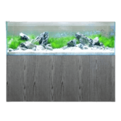

Fish Tank Recommendations
Starting with a second-hand 20-gallon tank is a great option for beginners!
5-Gallon Fish Tank
20-Gallon Fish Tank
50-Gallon Fish Tank

100-Gallon Fish Tank
Local Aquatic Supply Stores
If you're looking for reliable places to purchase fish tanks and aquatic accessories, here are some great options in Malaysia:
| TUNG YOUNG AQUARIUM | |
|---|---|
| We recommend Tung Young Aquarium. It is because they have over 20 years of experience specializing in aquatic pets and accessories. | |
| Address: 44, Jalan Rubber, 93300 Kuching, Sarawak | |
| Opening Hours: Every day from 9 AM to 6:30 PM | |
| Contact Information |
Phone: +60 16-448 5675 |
| Email: christopherlbtiano@gmail.com | |
| FISH DEPOT | |
|---|---|
| We recommend this store as it has a wide range of aquarium supplies as well as fish tank setup and offers maintenance services. Their friendly and knowledgeable staff are always there to assist you. | |
| Address: 5-1, Jalan Pju1/3F Sunwaymas commercial Centre,47301 Petaling Jaya, Selangor Malaysia 47301 Petaling Jaya, Selangor, Malaysia | |
| Opening Hours: Every day from 11:00 AM – 6:30 PM, Closed on Tuesday | |
| Contact Information |
Phone: +60 3-7886 7012 |
| Email: fishdepot@fishdepot.com.my | |
| UNIQUE AQUAPETS | |
|---|---|
| If you’re searching for freshwater fish, Unique Aquapets at NSK Kuchai Lama is a good option. Not to mention, they also provide services including aquarium design and installation. | |
| Address: Nsk Kuchai Lama, Basement 1 Lot L04 58200 Kuala Lumpur, Malaysia | |
| Opening Hours: Every day from 10:00 AM – 9:00 PM, closed on Tuesday | |
| Contact Information |
Phone: +60 16-992 9986 |
| Email: unique-aquapets@outlook.com | |
| J&S PENANG FISH HOME | |
|---|---|
| At J&S Penang Fish Store, they have all the things you need to set up your perfect fish home. Not to mention, their helpful staff is ready to give you tips and advice for your aquarium. | |
| Address: R-2-15, Setia Triangle, Persiaran Kelicap, Bayan Lepas, Malaysia | |
| Opening Hours: Monday-Wednesday open from 11:00 AM-6:00 PM. Thursday- Saturday open from 11:00 AM-7:00 PM, closed on Sunday | |
| Contact Information |
Phone: +60 16-219 5070 |
| JURRASIC AQUA | |
|---|---|
| Jurrasic Aqua have great selection of fish and equipments. Their staff is super friendly and always ready to help with any questions plus they also accept credit card payments. | |
| Address: 182, Jalan Pahlawan 2, Taman Ungku Tun Aminah, 81300 Skudai, Johor | |
| Opening Hours: Monday, Tuesday, Thursday, Sunday open from 10:00 AM- 7:00 PM Wednesday open from 10:00 AM – 6:30 PM | |
| Contact Information |
Phone: +60 16-716 2728 |